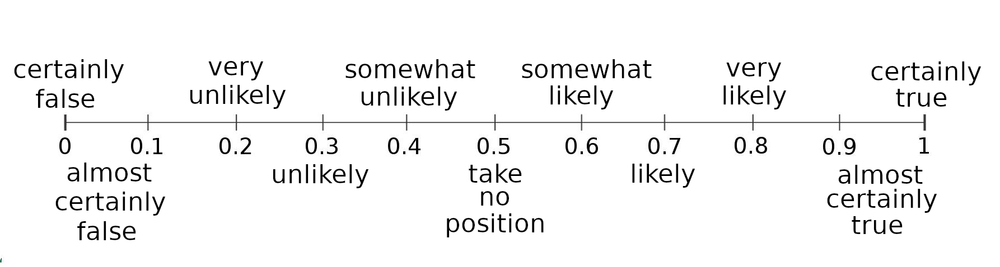

simple tools, part 4: probability and degrees of belief
Written on
Before we start, an admission: The things in this post are not so much useful in themselves as prerequisites for things we're going to do later. For many of the tools that follow, we'll need to be able to assign numbers to our subjective degrees of confidence. By the end of this post, you'll know how we're going to do that!
Suppose we're trying to decide whether to found a startup, and that the probability of success of a randomly chosen startup is 10% (numbers like this often come from historical frequency data). To make the math work out right for the models I'll be introducing later, we'll divide by 100 and represent probabilities as numbers between 0 and 1 instead of between 0 and 100.
If our startup were like a randomly chosen one, then, we would estimate our probability of success at 0.1. This probability, which we get before taking into account the details of our own particular circumstances, is called the base rate or prior probability; it comes from Bayesian probability theory (on which more later).
At this point we could look up the most common reasons that startups fail and then take steps to make those outcomes less probable. For example, running out of money is a common reason; to mitigate that possibility, we could work extra hard securing investors. We might also make extra sure that we did our due diligence with market analysis, etc. Suppose we did all this. Now we can update our prior to... what?
What we need is a way to map our new (albeit squishy and gut-derived) degree of confidence to a probability; we can do it via the following reasoning: Consider flipping a fair coin. It has probability 0.5 of landing heads and 0.5 of landing tails. If I asked you, before flipping, "Do you think the coin will land heads?", an answer that would make tons of sense is "I have no idea, it's equally likely to come up either way!" From this we conclude that 0.5 corresponds to taking no position, that is, not believing either way about the truth of some possibility.
Now suppose that the coin is weighted so that it lands heads 60% of the time. In this case a reasonable answer to the question of which side in will land on is "I suspect it will land heads, because it's a little more likely to do that." By now, you see where this line of reasoning is going: Probabilities between 0.5 and 1 represent increasing degrees of confidence that a thing will happen, and between 0.5 and 0 represent degrees of confidence that it won't.
Returning to our problem: What is the probability corresponding to our degree of confidence of success now that we've taken precautions? Our starting value of 0.1 is a lot closer to zero than it is to 0.5, so it corresponds to being highly confident that the business will fail (i.e., highly confident that it won't succeed). How much should we increase that number for our particular case? It's a difficult question, about which much ink or, erm, pixels can be spilled. Let's say you only suspect failure. If 0.6 is suspecting success, then 0.4 should be suspecting failure, so our updated degree of confidence that the business will succeed is 0.4.
That's how it works! Here is a scale with suggested degrees of belief attached:
